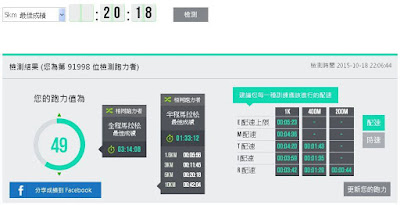
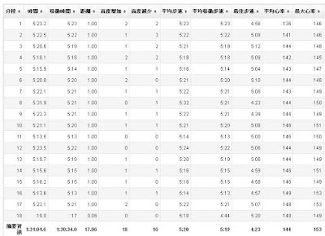
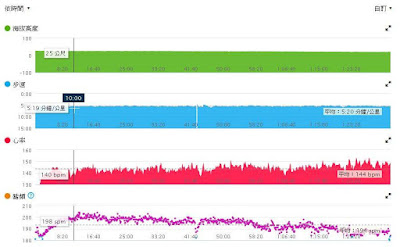
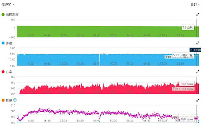
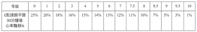

確定有氧體能基礎穩固後的下一步？
前幾天分享一篇：「有氧基礎」是否已建立妥當，可以用「E 配速 90 分鐘」的心率飄移幅度來判斷。在全程平坦的路段，Ｅ配速的心率若能在 90 分鐘內飄移 10%以內就算具備「優秀的有氧體能」(5%以內是國家級的有氧體能)。有興趣的朋友可以參考〈E 配速打好體能基礎，「好」的標準是？〉
在臉書上分享後，旻哲立刻就去做了測試(真是有效率)，而且分享到臉書上，早上看到他的數據後，讓我非常興奮，因為他的結果剛好可以很明確地指引他下一步的訓練方向。
我原本想單獨給他建議，但我想花些時間寫成一篇文章來分享，也可以讓更多人知道「有氧體能基礎穩固後，該如何調整訓練重點」，經過旻哲的同意後，下面引用他的測驗結果與圖片。
旻哲「E 配速 90 分鐘」實際測試
- 日期：2015/10/18 晚上
- 場地：操場
- 一開始先做簡單的動態暖身約 1 分鐘，接著配到 E 配速 5'23/km 定速跑，途中約 40 分鐘時補水一次不到 30 秒，後面就一直維持到 90 分鐘才休息(感謝這次張小毅陪跑聊天)。

【圖 01】旻哲 10/17 晚上測 5K 重新確認目前的跑力是 49，更新 E 配速為 5'23/Km！

【圖 02】連續跑 90 分鐘的每公里分段配速表

【圖 03】第 10 分鐘的心跳率為 140bpm = A

【圖 04】第 90 分鐘的心跳率為 149bpm = B
心率飄移計算：(B-A)÷A×100% = (149 - 140)/140×100% = 6.43%

【圖 05】有氧體能基底的穩固性→9 級。因為從圖 02 可以看出旻哲在後半段有不自覺加速到 5'13~5'21/km，所以估計他的飄移會在 5%左右。算是有氧基礎非常穩固的跑者。
若他接下來想進步，該以哪一種課表為主呢？
以金字塔來比喻一位跑者的體能訓練進程，只要「基底」打得夠穩夠厚實，就可以開始往上蓋(也就是做更高強度的訓練)。
但是，值得注意的是：當體能已經夠穩夠紮實後，若還是「只練」LSD(E/M 強度)或 T 強度以下的課表，之後的進步就會非常有限(這裡指的是全馬以下的距離)。當然，如果目標是超馬的話，訓練的重點還是以 E/M 強度的課表為主，LSD 的量還是不能少，要繼續延長訓練時間。
但如果目標是全馬，E 強度的 LSD 最多到 2.5 小時就夠了(對於此論點有興趣的朋友，可參考之前寫的文章：〈若你的訓練目標是全馬，E 強度的 LSD 最長只要練到 2.5 小時就夠了！〉)
若你挑戰 PB 的目標賽事(或測驗)是 3000 公尺~42 公里，當你的有氧體能基礎像旻哲這樣穩固後，接下來的重點就是：間歇訓練。應該先從刺激最大攝氧量的 I 強度間歇開始(1~2 個月)，接著逐漸加入 T 強度間歇(1~2 個月)，這段期間的 LSD 只要每週一次，目的是維持基礎體能。如此，整體的成績(42 公里以下的個人紀錄)比較容易突破。
因此，我想分享的重點是：
- 想要變快一定要練間歇，但何時可以開始練呢？具體的檢測方式是用「E 配速 90 分鐘的心率飄移%」。確定在 10%以下之後就可以開始練間歇來提升表現。
- 那什麼時候要再重新練 LSD 呢？當目標賽事(或測驗)結束，重新用耐力網(或丹尼爾斯的 VDOT 表)檢測跑力，跑力也確實提升後→E 配速也提升了，就該「重新打底」，接著再等到「新的 E 配速」90 分鐘的心率飄移能練到 10%以下，就再開始練間歇，拉速度。
- 若能依此原則，往復循環，大體上就掌握了跑者週期化訓練的核心。
世界級的頂尖選手之所以能達到「神人」等級，他/她們的實力都是建構在一輪又一輪的週期化訓練之下。想追求卓越，就必須有計畫地進行週期訓練，隨性的訓練，比賽成績也會變得很隨性。該慢的時候要忍住不加速，該快的時候要咬牙抵抗想放慢的念頭，不能隨性跟著朋友，要耐著性子跑該週期的強度。
所以我一直覺得，在耐力運動的世界裡最強的人，需要同時具備外部的「知識」與內在的「智慧」，他一定要懂科學化的知識(或是他/她的教練懂)，同時又要具有智慧：能耐著性子忍受孤獨、不爭強好勝、在不該比賽的時候要能忍住獎金與得名上凸台的誘惑。克制名利之慾，是智慧，這與科學化訓練的知識無關。知識與智慧同具才是強者，一位運動家的真實樣貌 。
==
在此特別感謝跑者吳旻哲提供檢測資料。
現在旻哲的目標是 100K 超馬，那就要繼續維持 E/M 強度的 LSD 訓練，繼續延長 M 配速的續航力。若之後以全馬為目標的話，訓練應該以「間歇」為主。